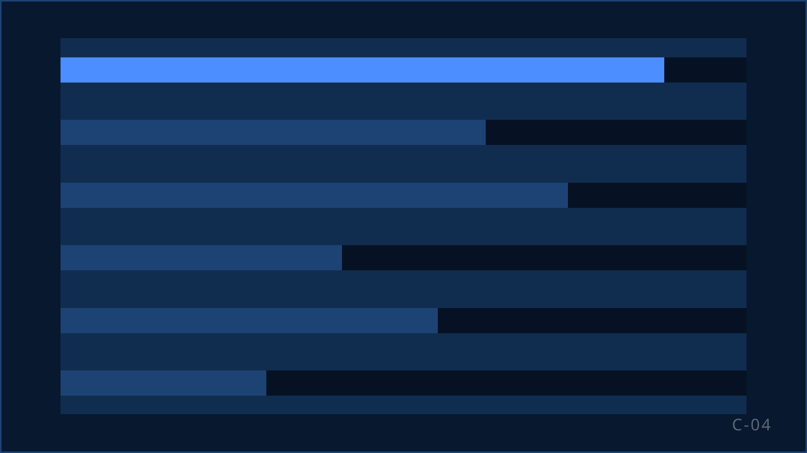

Leadopvolging uitbesteden: elke opt-in lead snel en goed gebeld
Uw campagnes leveren leads op: winacties, formulieren, proefabonnementen, donatiepagina's. Iedere lead heeft toestemming gegeven om gebeld te worden en verwacht dat dit snel gebeurt. KISS belt ze na met een vast team dat uw propositie kent, legt de toestemming per lead vast en geeft de uitkomst terug aan uw CRM. ISO 27001-gecertificeerd.

Wanneer leadopvolging uitbesteden
Leads blijven liggen na een piek
Een tv-actie, een winactie of een campagnemaand levert in dagen meer leads op dan uw team in weken kan bellen. Elke dag wachten kost conversie.
Marketing levert meer dan sales aankan
De campagne werkt, de opvolging niet. De leadflow verdient een team dat er alleen voor bestaat.
Opt-in is sinds 1 juli 2026 de basis
Buiten de wettelijke uitzonderingen voor ideële en charitatieve instellingen, loterijvergunninghouders en uitgevers van periodieken mogen bedrijven consumenten alleen nog bellen met voorafgaande, aantoonbare toestemming. Een opt-in lead is dan het waardevolste contact dat u heeft.
Van lead tot uitkomst: zo werkt leadopvolging bij KISS
Aanlevering en consent-check
Leads komen binnen via bestandsuitwisseling of een koppeling met uw systeem. Per lead leggen wij vast waar en wanneer de toestemming is gegeven. Ontbreekt die basis, dan bellen wij niet.
Opvolgsnelheid
Wij spreken met u af binnen welke termijn een lead de eerste belpoging krijgt en hoeveel pogingen volgen. Een lead die vanochtend is binnengekomen, hoort niet volgende week gebeld te worden.
Scriptlogica
Het gesprek sluit aan op wat de lead heeft gedaan: de winactie, de proefperiode, het formulier. Het aanbod volgt uit die context, niet uit een generiek script.
Terugkoppeling naar uw CRM
Elke lead krijgt een uitkomst: verkocht, niet bereikt, geen interesse, later terugbellen, opt-out. Die uitkomst gaat terug naar uw systeem, met de toestemmingsregistratie erbij.
Optimalisatie met marketing
Conversie per leadbron laat zien welke campagne goede leads oplevert en welke niet. Dat inzicht hoort bij uw marketingteam, en wij leveren het.
Waar wij op sturen
Bij leadopvolging telt tijd. De rapportage laat daarom niet alleen zien wat er is verkocht, maar ook hoe snel een lead is gebeld en waar leads verloren gaan.
Opvolgtijd en bereik
Tijd tussen binnenkomst en eerste belpoging; percentage leads bereikt binnen de afgesproken termijn.
Conversie per leadbron
Welke campagne, welk kanaal en welk formulier leads opleveren die kopen of doneren.
Kwaliteit per gesprek
Score op opening, aansluiting op de aanleiding en afsluiting; coachingacties in de rapportage.
De rapportage komt uit onze eigen IT & development en sluit aan op uw systeem via koppeling of bestandsuitwisseling. De frequentie van de review spreken we per campagne af.
Compliance bij leadopvolging
| Regel | Hoe KISS het toepast |
|---|---|
| Toestemmingsbasis van de lead | Toestemming moet specifiek, persoonlijk en duidelijk vastgelegd zijn en per gebelde persoon te bewijzen (ACM, 29-06-2022). Wij registreren per lead de bron, het moment en de tekst van de toestemming. |
| Veroudering van toestemming | Toestemming veroudert: hoe ouder, hoe zwakker (ACM). Wij spreken met u een uiterste termijn af waarbinnen een lead wordt gebeld; daarna bellen wij niet meer. |
| Identificatie en aanleiding | Wij melden aan het begin van elk gesprek wie wij zijn, namens wie wij bellen en wat het doel is, en verwijzen naar de actie waarvoor de lead zich heeft aangemeld. |
| Schriftelijke bevestiging en opt-out | Een overeenkomst tot het geregeld verrichten van diensten wordt pas definitief na schriftelijke aanvaarding door de consument (art. 6:230v lid 6 BW). Elk verzoek om niet meer gebeld te worden verwerken wij direct. |
De regels sinds 1 juli 2026 uitgelegd · Onze complete checklist
Waar leadopvolging voor ons vooral speelt
Sector
Media & uitgevers
Proefabonnementen en winacties omzetten naar betaalde abonnementen.
Bekijk sector
Sector
Goede doelen
Leads uit online campagnes en evenementen omzetten naar structurele donateurs.
Bekijk sector
-
Case · Loterijen en goede doelen
Goede Doelen Loterijen: samenwerking sinds 2019
Campagnes opbouwen, inrichten en uitvoeren: winback, leadopvolging en commercieel inbound.
Lees de case
Vragen over leadopvolging uitbesteden
Hoe snel belt KISS een lead?
Dat spreken we per campagne af, afhankelijk van uw leadflow en de bezetting. Hoe sneller na de aanmelding, hoe hoger de kans op contact en conversie.
Wat als een lead geen geldige toestemming blijkt te hebben?
Dan bellen wij niet. De lead gaat terug naar u met de reden. Liever een lead minder dan een gesprek zonder basis.
Kan KISS koppelen met ons CRM?
Ja, via een koppeling of via bestandsuitwisseling, afhankelijk van uw systeem. Onze eigen IT & development richt de gegevensuitwisseling in en legt die vast in de verwerkersovereenkomst.
Hoeveel belpogingen doet KISS per lead?
Het aantal en de spreiding spreken we met u af, binnen de Code Telemarketing: maximaal drie pogingen per dag met minimaal vier uur ertussen, alleen op de toegestane beltijden.
Krijgen wij inzicht per leadbron?
Ja. De rapportage laat conversie, bereik en opt-outs zien per campagne, kanaal en formulier. Zo ziet uw marketingteam welke bron leads oplevert die ook echt kopen of doneren.
Vangt KISS ook inbound op?
Ja. Leads die zelf bellen na een actie of uitzending kunnen door hetzelfde team worden opgevangen, zodat propositie en registratie gelijk blijven.
Gerelateerde diensten
B2C-sales uitbesteden
De volledige dienst: verkoop, cross-sell en upsell, winback en opschaling.
Retentie & klantbehoud
Opzeggers behouden en oud-klanten terugwinnen.
Telemarketing uitbesteden
Het vak en de regels die sinds 1 juli 2026 gelden.
Bespreek uw salesvraag.
Vertel ons welk volume, welke doelgroep en welk resultaat u zoekt. Wij vertellen u eerlijk of en hoe KISS dat kan organiseren.